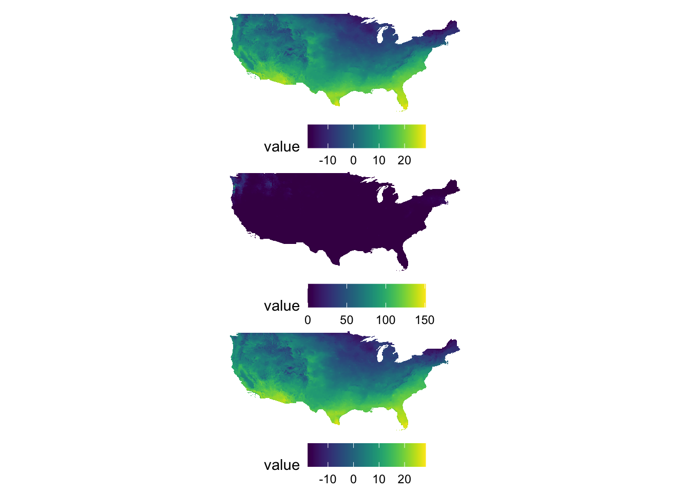
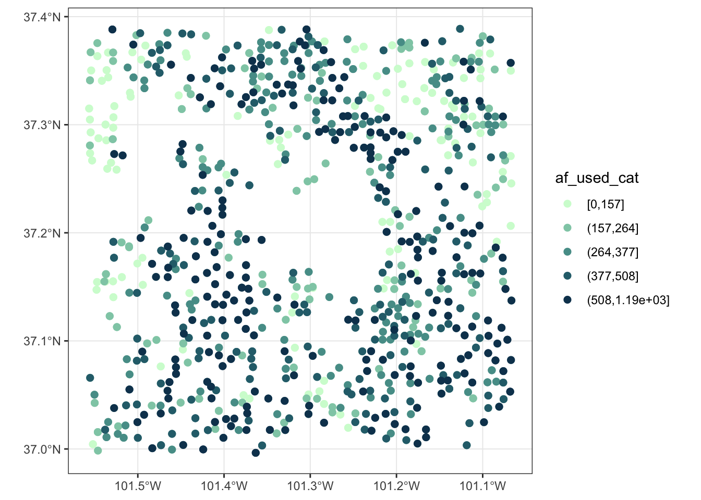
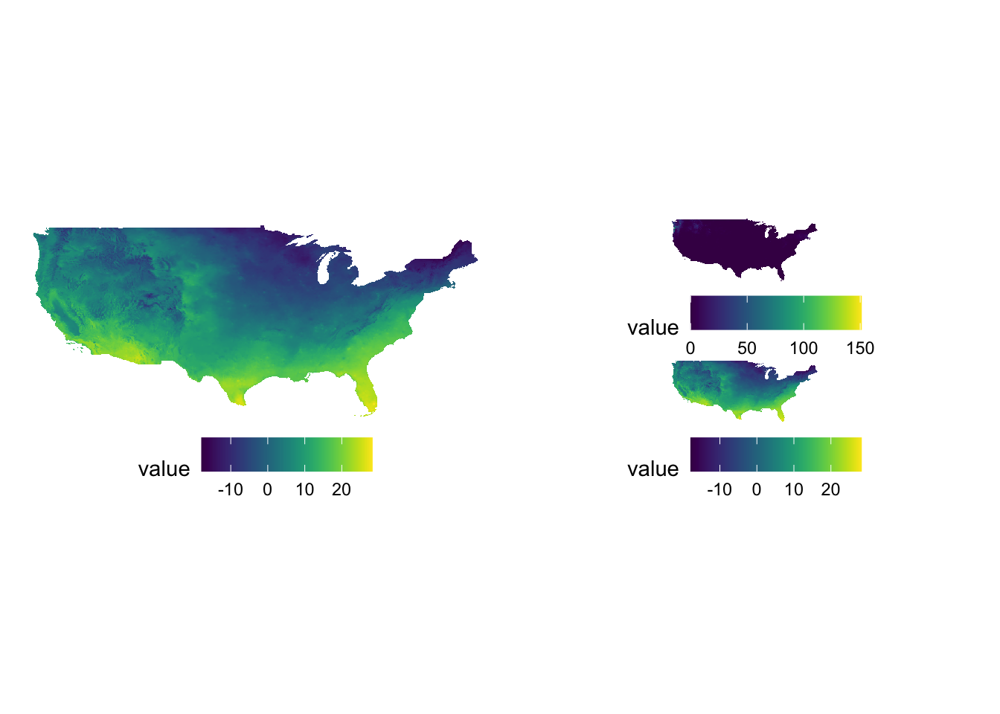
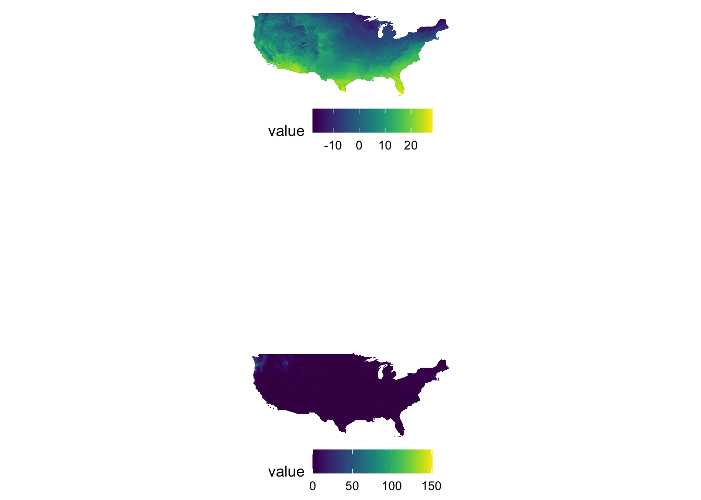
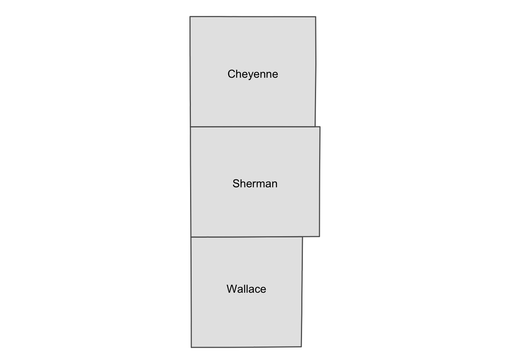
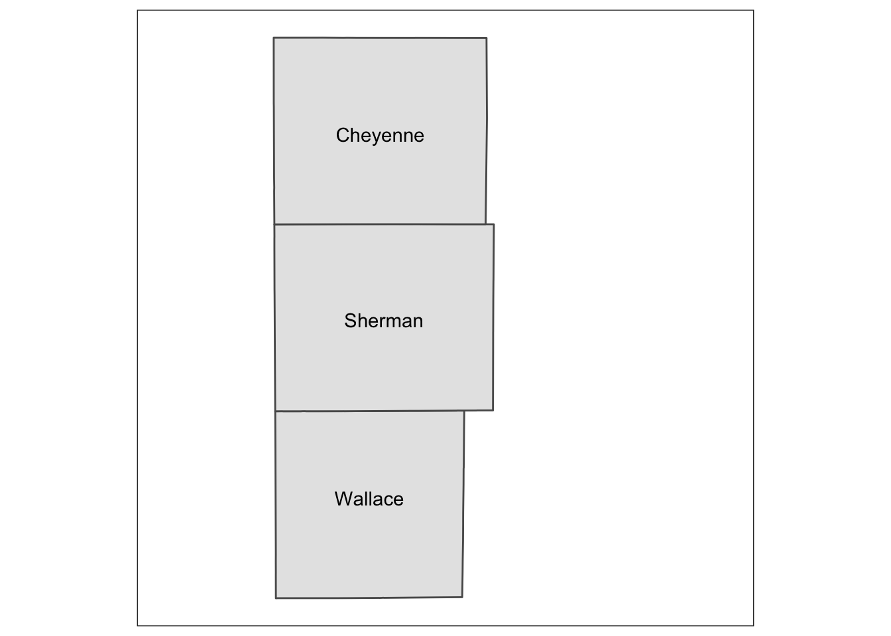
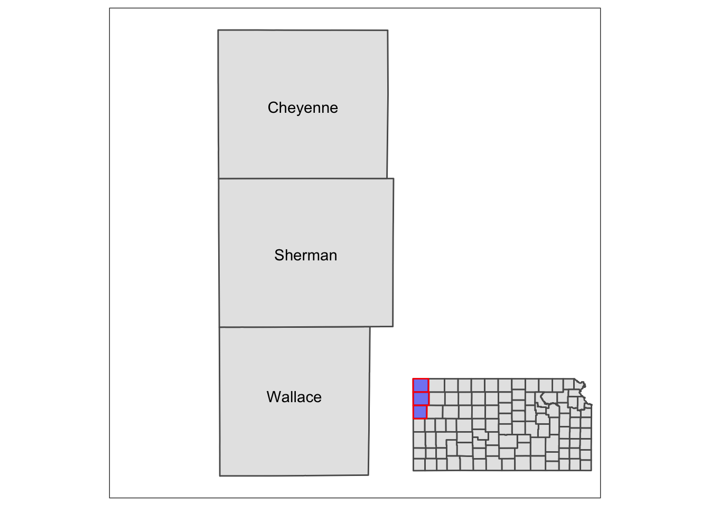
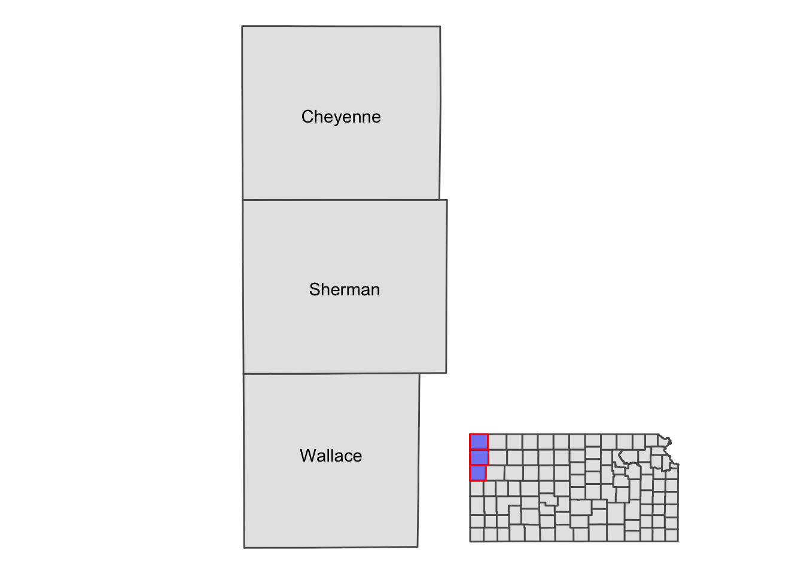

8.4 Arranging maps
8.4.1 Multiple panels of figures as a single figure
Faceting using facet_wrap() or facet_grid() allows for dividing the data into groups and creating a map for each group. It is particularly suitable for visualizing one variable at different facets. A good example is a collection of maps of tmax observed at different dates (see figure below). Faceting provides a single consistent color scale shared across the facets.
ggplot() +
geom_raster(data = tmax_long_df, aes(x = x, y = y, fill = tmax)) +
facet_wrap(date ~ .) +
coord_equal() +
scale_fill_viridis_c() +
theme_void() +
theme(
legend.position = "bottom"
)
However, faceting is not suitable for creating maps of different variables. To see this let’s plot tmax and precipitation on Jan 1, 2009 together.
#--- import precip data ---#
ppt_long_df <- read_stars("./Data/PRISM/PRISM_ppt_y2009_m1.tif") %>%
#--- change the variable name ---#
setNames("ppt") %>%
#--- first five days of January ---#
filter(band <= 5) %>%
#--- set the date values ---#
st_set_dimensions("band",
values = seq(ymd("2009-01-01"), ymd("2009-01-05"), by = "days"),
names = "date"
) %>%
as.data.frame(xy = TRUE) %>%
na.omit()Let’s extract tmax and precipitation on Jan 1, 2009 from their respective datasets, and combine them.
#--- get tmax on Jan 1, 2009 ---#
tmax_df <- filter(tmax_long_df, date == ymd("2009-01-01")) %>%
setnames("tmax", "value") %>%
mutate(type = "tmax")
#--- get precipitation on Jan 1, 2009 ---#
ppt_df <- filter(ppt_long_df, date == ymd("2009-01-01")) %>%
setnames("ppt", "value") %>%
mutate(type = "ppt")
#--- combine them ---#
combined_df <- rbind(tmax_df, ppt_df)Here is the map faceted for tmax and precipitation:
ggplot() +
geom_raster(data = combined_df, aes(x = x, y = y, fill = value)) +
facet_grid(type ~ .) +
scale_fill_viridis() +
theme_void()
As you can see, a single color scale is created for precipitation recorded in mm and temperature observed in Celsius. On this particular day, precipitation of more than 150 mm was observed on a part of the west coast. Consequently, you see almost no color differentiation on the tmax map which ranges roughly from -20 to 30. It is simply not a good idea to facet for two variables observed at different scales.
Instead, you should have an independent color scale for each of the variables and then just combine them. Now, you might ask if you really need to combine the two. Can’t you just have two figures and arrange them in the manner you would like on a pdf or WORD document? If you are still convinced that you need to have two panels of figures as one figure, then you can use the patchwork package.
patchwork combines ggplot objects (maps) using simple operators: +, /, and |. Let’s first create maps of tmax and precipitation separately.
#--- tmax ---#
(
g_tmax <- ggplot() +
geom_raster(data = tmax_df, aes(x = x, y = y, fill = value)) +
scale_fill_viridis() +
theme_void() +
coord_equal() +
theme(legend.position = "bottom")
)#--- ppt ---#
(
g_ppt <- ggplot() +
geom_raster(data = ppt_df, aes(x = x, y = y, fill = value)) +
scale_fill_viridis() +
theme_void() +
coord_equal() +
theme(legend.position = "bottom")
)
It is best to just look at examples to get the sense of how patchwork works. A fuller treatment of patchwork is found at its packagedown website (https://patchwork.data-imaginist.com/index.html).
Example 1

Example 2

Example 3

Example 4

Example 5

Sometimes figures are placed too close to each other. In such a case, you can pad a figure at the time of generating individual figures by adding the plot.margin option to theme(). For example, the following code creates space at the bottom of g_tmax (5 cm), and vertically stack g_tmax and g_ppt.
#--- space at the bottom ---#
g_tmax <- g_tmax + theme(plot.margin = unit(c(0, 0, 5, 0), "cm"))
#--- vertically stack ---#
g_tmax/g_ppt
In plot.margin = unit(c(a, b, c, d), "cm"), here is which margin a, b, c, and d refers to.
- a: top
- b: right
- c: bottom
- d: left
8.4.2 A map in a map: inset
Sometimes, it is useful to present a map that covers a larger geographical range than the area of interest in the same map. This provides a better sense of geographic extent and the location of the area of interest relative to the larger geographic extent that the readers are more familiar with. For example, suppose your work is restricted to three counties in Kansas: Cheyenne, Sherman, and Wallace. Here is the map of three counties:
three_counties <- filter(KS_county, NAME %in% c("Cheyenne", "Sherman", "Wallace"))
(
g_three_counties <- ggplot() +
geom_sf(data = three_counties) +
geom_sf_text(data = three_counties, aes(label = NAME)) +
theme_void()
)
Well, for those who are not familiar with Kansas, it might be useful to show where in Kansas they are located on the same map (or even where Kansas is in the U.S.). This can be achieved using ggplotGrob() and annotation_custom(). The steps are the following:
- create a map of the area of interest, turn it into a grob using
ggplotGrob() - create a map of the region that includes the area of interest
- combine the two using
annotation_custom()
#--- convert the ggplot into a grob ---#
grob_aoi <- ggplotGrob(g_three_counties)
#--- check the class ---#
class(grob_aoi)[1] "gtable" "gTree" "grob" "gDesc" #--- create a map of Kansas ---#
g_region <- ggplot() +
geom_sf(data = KS_county) +
geom_sf(data = three_counties, fill = "blue", color = "red", alpha = 0.5) +
theme_void()
#--- convert to a grob ---#
grob_region <- ggplotGrob(g_region)Now that we have two maps, we can now put them on the same map using annotation_custom(). The first task is to initiate a ggplot with coord_equal() as follows:

You now have a blank canvas to put the images on. Let’s add a layer with annotation_custom() in which you provide the grob object (a map) and specify the range of the canvas the map occupies. Since the extent of x and y are set to [0, 1] above with coord_equal(xlim = c(0, 1), ylim = c(0, 1), expand = FALSE), the following code put the grob_aoi to cover the entire y range and up to 0.8 of x from 0.

Similarly, we can add grob_region using annotation_custom(). Let’s put it at the right lower corner of the map.
g_inset +
annotation_custom(grob_aoi, xmin = 0, xmax = 0.8, ymin = 0,
ymax = 1) +
annotation_custom(grob_region, xmin = 0.6, xmax = 1, ymin = 0,
ymax = 0.3) 
Note that the resulting map still has the default theme because it does not inherit the theme of maps added by annotation_custom(). So, you can add theme_void() to the map to make the border disappear.
g_inset +
annotation_custom(grob_aoi, xmin = 0, xmax = 0.8, ymin = 0,
ymax = 1) +
annotation_custom(grob_region, xmin = 0.6, xmax = 1, ymin = 0,
ymax = 0.3) +
theme_void()